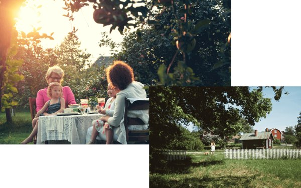
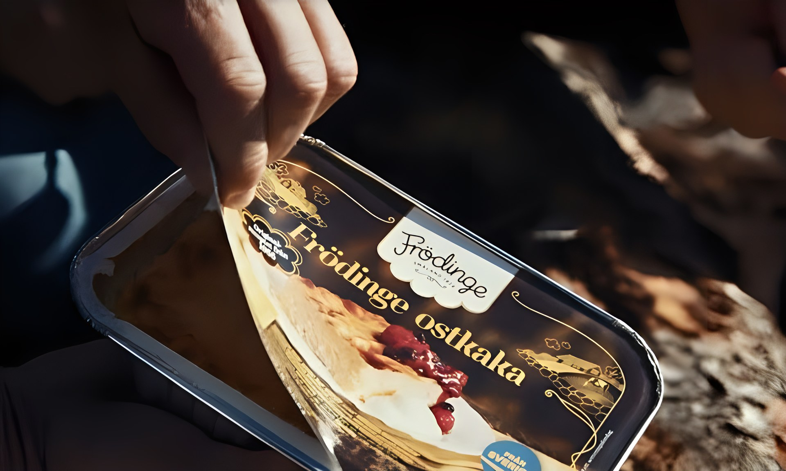
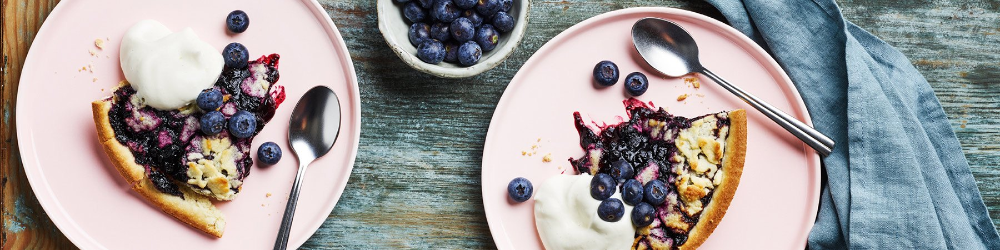

Det här gör vi just nu
- 01

Ett bageri på förnybar energi
Pellets från småländska skogar, lokal fjärrvärme och el från vatten och vind.
Läs mer - 02

Klassikern sedan 1955
Receptet på Frödinge ostkaka har aldrig ändrats.
Läs mer - 03

Mjölk från gårdar i Småland
Våra råvaror kommer gärna från gårdarna runt omkring oss.
Läs mer
Vad blir det till fikat idag?
Nästan hundra år av fika
Från ett småländskt mejeri till Sveriges mest älskade ostkaka.
- 1929Frödinge börjar baka i Småland
- 1955Frödinge ostkaka når svenska hem
- Idag17 produkter och ett bageri på förnybar energi
- IllustrationsbildVårt ansvar
Alltid från Småland
Frödinge ostkaka bakas med svenska råvaror och är märkt Från Sverige. Överblivna råvaror och produkter blir i största möjliga mån djurfoder.
Läs om vårt hållbarhetsarbete- 01100 %förnybar energi i bageriet
- 02

Från Sverigeursprungsmärkt ostkaka - 03Lokaltmjölk från gårdar i Småland med omnejd
Småländsk generositet, helt enkelt
Småländskt förknippas ofta med sparsamhet. Inte hos oss. Vi delar med oss av småländska kulturskatter som ostkaka, och av paj, tårta och kladdkaka från bageriet.
- 192901 / 04
Bakat sedan
- ~10002 / 04
Medarbetare i Frödinge
- 100%03 / 04
Förnybar energi i bageriet
- 1704 / 04
Produkter i sortimentet
Baka med oss i Frödinge
Bagare, tekniker, lab, lager och kontor – cirka 100 kollegor i fabriken i Frödinge.
Hos oss får du kollegor som bryr sig om både fikat och hantverket, och ett bageri i Frödinge där alla behövs.
Illustrationsbilder